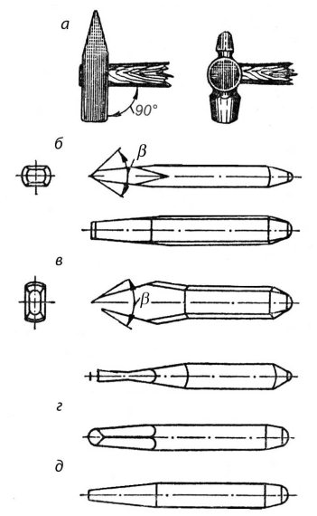
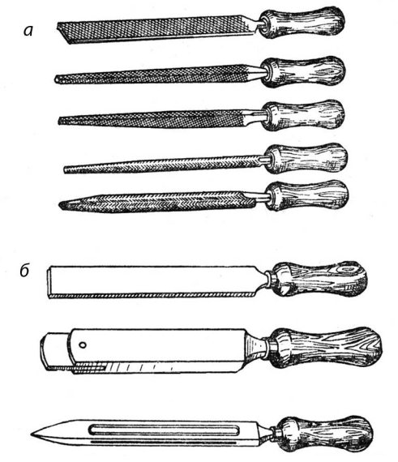
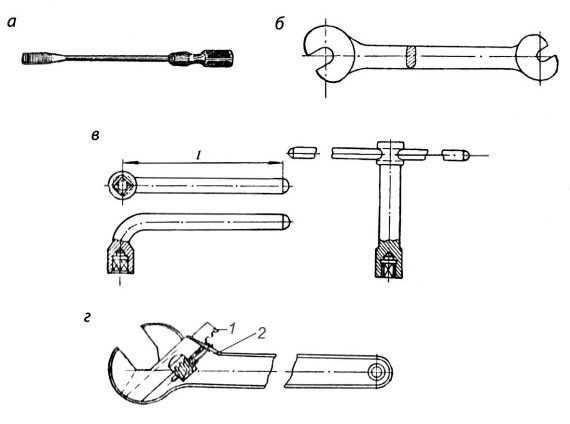

Рабочий инструмент.


При выполнении слесарных работ пользуются разнообразными инструментами и приспособлениями. Рабочий инструмент слесаря подразделяется на ручной и механизированный.
Типовой набор ручного инструмента делится на:
а) режущие инструменты – зубила, крейцмейсель, набор напильников, ножовка, шаберы, спиральные сверла, цилиндрические и конические развертки, круглые плашки, метчики, абразивные инструменты (бруски и пасты) и др.;
б) вспомогательные инструменты – слесарный и рихтовальный молотки, керн, чертилка, разметочный циркуль, плашкодержатель, вороток и т. п.;
в) слесарно-сборочные инструменты – отвертки, гаечные ключи, бородок, плоскогубцы, ручные тиски и др.
Молотки слесарные являются наиболее распространенным ударным инструментом. Они служат для нанесения ударов при рубке, пробивании отверстий, клепке, правке и т. д. В слесарном деле применяются молотки двух типов – с круглыми и квадратными бойками (рис. 6, а). Молотки с круглым бойком применяют в тех случаях, когда требуется значительная сила или точность удара. Молотки с квадратным бойком выбирают для более простых работ. Молотки изготавливаются из сталей марок 50, 40Х или из стали У7; их рабочие части – боек и носок – подвергают закалке на длину не менее 15 мм с последующей зачисткой и полировкой.
Вес молотков в зависимости от назначения варьируется в следующих пределах: 50, 100, 200 и 300 г – для выполнения инструментальных работ, 400, 500 и 600 г – для слесарных работ, 800, 1000 г – для ремонтных работ.
Материалом для ручек молотков служат кизил, рябина, клен, граб, береза – породы деревьев, древесина которых отличается прочностью и упругостью. В сечении ручка должна быть овальной, а ее свободный конец делают в полтора раза толще, чем у отверстия молотка. Длина ручки зависит от веса молотка. В среднем она делается длиной 250–350 мм; для молотков весом 50—200 г длина ручек берется 200–270 мм, для тяжелых – 350–400 мм. Конец ручки, на который насаживается молоток, расклинивается деревянным клином, смазанным столярным клеем, или же металлическим клином с насечкой.
Зубило применяется для разрубания на части металла различного профиля, удаления припусков с поверхности заготовки, срубания приливов и литников на литых заготовках, головок заклепок при ремонте заклепочных соединений и т. п.
Зубило состоит из трех частей – рабочей, средней и ударной (рис. 6, б). Рабочая часть зубила имеет форму клина, углы заточки которого выбираются в зависимости от обрабатываемого материала. Средней части слесарного зубила придается овальное или многогранное сечение без острых ребер на боковых гранях, чтобы не поранить руки. Головке (ударной части) зубила придается форма усеченного конуса.

Рис. 6. Набор основного ударного инструмента слесаря:
а – молотки, б – зубила, в, г – крейцмейсели, д – бородок
Материалом для изготовления слесарных зубил служит углеродистая сталь У7А и У8А. Рабочая часть зубила закаливается на длине 15–30 мм, а ударная – на длине 10–20 мм.
Крейцмейсель – инструмент, однотипный с зубилом, но с более узкой режущей кромкой. Он применяется для вырубания узких канавок и пазов (рис. 6, в). Для вырубания канавок во вкладышах подшипников и других подобных работ применяют специальные канавочные крейцмейсели (рис. 6, г) с остроконечными и полукруглыми кромками. Изготовляются крейцмейсели из углеродистой стали марки У7А и У8А и закаливают, как зубило.
Бородок применяется для пробивания отверстий в тонкой листовой стали, для установки просверленных под заклепки отверстий одного против другого, для выбивания забракованных заклепок, штифтов и др. Слесарные бородки (рис. 6, д) изготавливают из стали У7А или У8А. Рабочая часть бородка закаливается на всю длину конуса.
Напильники представляют собой режущий инструмент в виде стальных закаленных брусков различного профиля с насечкой на их поверхности параллельных зубьев под определенным углом к оси инструмента. Материалом для изготовления напильников служит углеродистая инструментальная сталь марок У13 и У13А, а также хромистая шарикоподшипниковая сталь ШХ15.
Напильники имеют различные формы поперечного сечения: плоские, квадратные, трехгранные, круглые и пр. В зависимости от характера выполняемой работы применяют напильники разной длины, с различным числом насечек.
Существуют три типа ручных напильников: обыкновенные, надфили и рашпили. Обыкновенные напильники (рис. 7, а) делают из углеродистой инструментальной стали марок У13 и У13А. Надфили – это те же напильники, но меньших размеров и с насечкой только на половину или три четверти своей длины. Гладкая часть надфиля служит рукояткой. Надфили изготовляются из стали У12 и У12А. Они применяются для обработки малых поверхностей и доводки деталей небольших размеров.
Рашпили отличаются от напильников и надфилей конструкцией насечки. Они применяются для грубой обработки мягких металлов – цинка, свинца и т. п., а также для опиливания дерева, кости, рога.
Шаберы (рис. 7, б) представляют собой стальные полосы или стержни определенной длины с тщательно заточенными рабочими гранями (концами). По конструкции шаберы разделяются на цельные и составные; по форме рабочей части – на плоские, трехгранные и фасонные, а по числу режущих граней – на односторонние, имеющие обычно деревянные рукоятки, и двусторонние без рукояток.

Рис. 7. Напильники (а) и шаберы (б)
Кроме цельных шаберов, в последнее время применяют и сменные, состоящие из держалки и вставных пластин. Режущими лезвиями таких шаберов могут служить пластинки инструментальной стали, твердого сплава и отходы быстрорежущей стали. Шаберы не стандартизированы. Они изготовляются из инструментальной углеродистой стали У10А и У12А с последующей закалкой.
Отвертки (рис. 8, а) применяются для завинчивания и отвинчивания винтов и шурупов, имеющих прорезь (шлиц) на головке. Они подразделяются на цельнометаллические с деревянными щечками, проволочные, коловоротные, специальные и механизированные. Отвертка состоит из трех частей: рабочей части (лопатки), стержня и ручки. Выбирают отвертку по ширине рабочей части, которая зависит от размера шлица в головке шурупа или винта.
Ключи гаечные являются необходимым инструментом при сборке и разборке болтовых соединений. Головки ключей стандартизированы и имеют определенный размер, который указывается на рукоятке ключа. Размеры зева (захвата) делаются с таким расчетом, чтобы и зазор между гранями гайки или головки болта и гранями зева был от 0,1 до 0,3 мм.
Гаечные ключи разделяют на простые одноразмерные, универсальные (разводные) и ключи специального назначения.
Простые одноразмерные ключи бывают плоские односторонние и плоские двусторонние (рис. 8, б); накладные глухие; для круглых гаек; торцовые изогнутые и прямые. Торцовые ключи прямые и изогнутые (рис. 8, в) применяются в тех случаях, когда гайку невозможно завинтить обычным ключом.

Рис. 8. Отвертка (а) и гаечные ключи (б, в, г)
Простыми одноразмерными ключами можно завинчивать гайки только одного размера и одной формы. Раздвижные (разводные) ключи (рис. 8, г) отличаются от простых ключей тем, что они могут применяться для отвинчивания или завинчивания гаек различных размеров. Они имеют размеры зева от 19 до 50 мм при различных длинах рукояток.
Специальные ключи носят название по роду применения, например ключ под вентиль, ключ к гайке муфты и т. д., а также для работы в труднодоступных местах.
Ножовка ручная обычно применяется для разрезания металла, а также для прорезания пазов, шлицев в головках винтов, обрезки заготовок по контуру и т. п. Ножовочные станки бывают цельными и раздвижными. Последние имеют то преимущество, что в них можно крепить ножовочные полотна различной длины.
Использование рассмотренного выше ручного инструмента связано с трудоемкой и малопроизводительной работой, тем не менее до сих пор еще многие слесари применяют только ручной инструмент, в то время как значительная доля слесарных работ может быть механизирована путем использования различных стационарных и переносных машин, а также электрических и пневматических инструментов.
Применение таких инструментов позволяет значительно повысить производительность труда. Так, например, завертывание болтов и гаек при помощи механизированного гайковерта производится в
4 – 10 раз быстрее, чем вручную обычным гаечным ключом; зачистка поверхностей с помощью переносных шлифовальных машинок осуществляется в 5 – 20 раз быстрее, а шабрение механизированным шабером в 2–3 раза быстрее, чем ручные операции шабрения.
Механизированные ручные инструменты можно разделить по видам операций, для выполнения которых они предназначены, на инструменты для рубки и разрезания металлов, опиливания, шлифования и зачистки деталей, обработки отверстий, нарезания резьбы, шабрения и притирки, для сборки резьбовых соединений и т. п.
В зависимости от типа двигателя различают инструменты электрифицированные, питаемые электрическим током, и пневматические, действующие от сжатого воздуха.
Механизированный ручной инструмент подразделяют также по характеру движения рабочего органа – шпинделя – на инструмент с вращательным и с возвратно-поступательным движением рабочего органа.
Среди механизированных инструментов электрического действия наибольшее применение находят электрогайковерты, электрошпильковерты, электродрели, шлифовальные и полировальные машины, электронапильники, резьбонарезатели; к инструментам пневматического действия относятся: гайковерты, механические отвертки, молотки, сверлильные машинки и др.
В зависимости от конструкции корпуса различают ручной механизированный инструмент с нагрудником, с рукояткой, пистолетного типа и угловой.
Устройство и действие различных видов механизированных инструментов рассматриваются при описании слесарных операций, в которых они применяются.